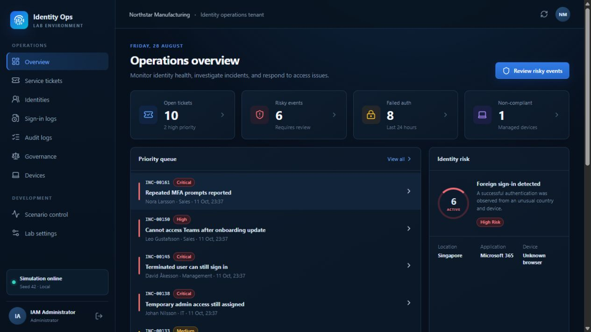
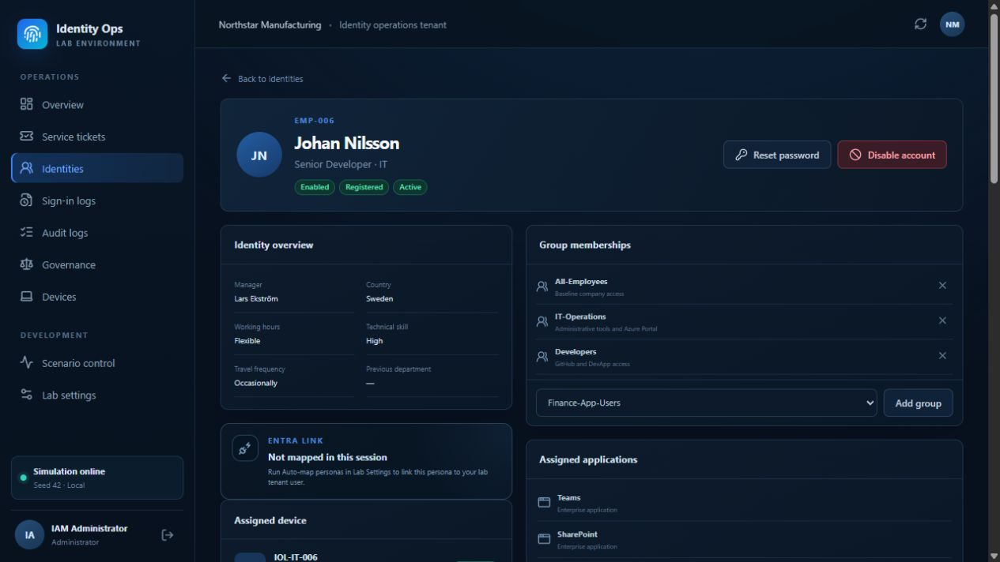
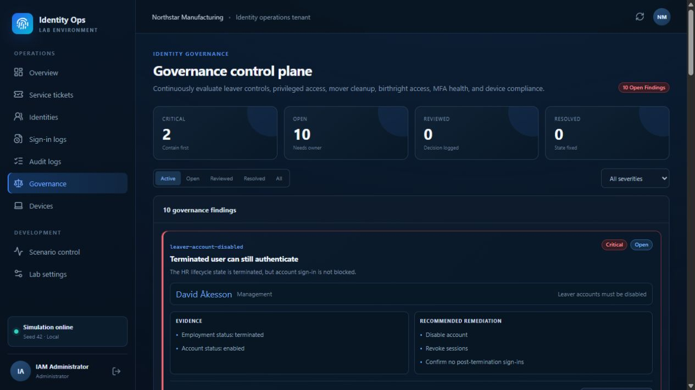
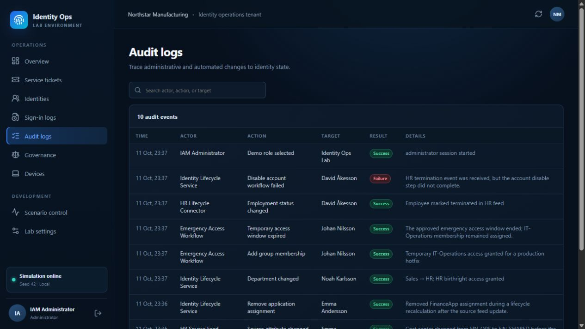

IAM operations · Working portfolio project
An IAM simulator connected to Microsoft Entra.
Investigate access problems in a simulated company. Check users and groups in your own Entra lab tenant through read-only Microsoft Graph calls.

What you do in the lab
Investigate the cause, not just the symptom.
-
01
Receive a ticket
Read the problem and ask the persona what happened.
-
02
Investigate the cause
Check account state, access and the events behind the issue.
-
03
Confirm the access need
Compare the employee’s role with the access owner’s approval.
-
04
Fix & verify
Make the appropriate change. Verify and document before closing.
Cases you can investigate
- Missing app accessFind why an employee can no longer open a required app.
- Access left after a role changeCheck whether old permissions still match the new role.
- An account still active after leavingTrace why the offboarding workflow did not disable it.
Simulation + real identity data
Simulated cases. Real Entra checks.
The lab creates the scenario. Microsoft Graph reads selected identity data from your Entra lab tenant. You make tenant changes yourself in the Entra portal.
A company with access problems
Personas, tickets, HR context and scenario sign-in and audit logs.
Identity Ops Lab
Read evidence. Validate access. Verify and document.
Microsoft Entra ID
Real lab users, groups, group membership and account status.
A persona reply is not a real sign-in test.
Persona conversations, scenario logs and remote support are simulated. To prove that real app access works, test the application separately with the lab account.
Inside the running app
See the identity, the risk and the history.
These screenshots come from the running simulator. Open any image to inspect the details.

Identity context
Who should have access?
Compare account state and current access with the employee’s role and business context.
Employee profile · Simulated data

Governance
Where do controls fail?
Investigate leaver accounts, stale privileges and access left behind after role changes.
Governance findings · Simulated data

Lifecycle history
Why did it happen?
Trace the events behind the issue and document what needs to change to prevent a repeat.
Audit trail · Simulated events
Watch the investigation
From a blocked app to a verified outcome.
Follow Emma’s FinanceApp case: inspect the evidence, confirm the business need, make a manual Entra assignment and review the lifecycle cause.
Full walkthrough · Microsoft Entra lab tenant + simulated case context
Watch on YouTubeThe person behind the lab
Built by Andreas Krisby.
I designed and built this lab to demonstrate how I investigate identity issues and reason about access. I’m looking for opportunities in IAM operations and identity security.
- Keep evidence separate from scenario truth.Investigations use the information available to the operator.
- Use read-only checks for the tenant connection.Real Entra changes stay under the operator’s control.
- Check the outcome before closing.Scenario requirements include access verification and governance review where needed.